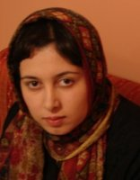

|
|
|
Browsing
Contact Us |
Campaigners |
Face to Face |
Tribune |
Interview |
News |
On the Web |
One Million |
Report
Farsi | Français | German | Italian | Spanish | العربية Also in this section
|
 43 Arrests in 14 Months Detentions and Summons against Campaigners for Gender EqualityCompiled by: Maryam Hosseinkhah Sunday 24 February 2008 Translated by: H. Milan Change for Equality: The One Million Signature Campaign was launched a year and a half ago. During this time, thanks to the efforts of campaigners for equal rights in Tehran, the provinces, and abroad, the Campaign has spread its activities even outside of Iran. These relentless efforts continue despite official persecution and prosecution of campaigners including interrogations, detentions, and prison terms. At every encounter, Campaign members pull out their literature to discuss the impact of laws on women’s lives and ask ordinary people to sign the Campaign’s petition against discriminatory laws. Their goal is to use the public and urban space, a space that belongs to women, too, for initiating dialogues with the general public, men and women, and to gather their signatures. The cost of pushing this social movement forward has been the issuance of temporary detention warrants for 43 Campaign activists (ranging from one day to five months), and the issuance of suspended prison sentences ( a total of 18 months). Acts of harassment and persecution happen during signature collection in public, following educational workshops, after small or large gatherings in Tehran and the provinces, and sometimes due to dissemination of news about the Campaign through its website. Here are the details of such instances: December 15, 2006: First Detention— Collecting Signatures inside the Metro; Zeinab Peyghambarzadeh The Campaign’s first meeting, marking its four month anniversary, was held in a member’s garage at their private house. Present at the meeting were activists involved with the Campaign. We hadn’t reached our homes yet when the news of Zeinab Peyghambarzadeh’s detention arrived. She had been discussing the campaign and discriminatory laws with people on the metro, asking them to sign up, when she was detained. After 5 days of detention at Gisha and Vozara detention centers, she was charged with “acting against national security.” After being interrogated at Branch 14 of the Revolutionary Court, she was released on December 19. January 10, 2007: Collecting Signatures inside the Metro; Nasim Sarabandi and Fatemeh Dehdashti Less than a month later, Nasim Sarabandi and Fatemeh Dehdashti were arrested while collecting signatures inside the metro, because of their reliance on peaceful methods for seeking their legal rights. Nasim and Fatemeh were held in Gisha detention center for one day before being released. As they had committed no criminal offense, it appeared their judicial case would be closed. However, these two female students received a summons in April 2007, demonstrating a change of course in the judicial inquiry. Nasim and Fatemeh, both studying at Tehran University, said: “We were first called by the University security office (Herasat) who informed us of a summons by the Security Police. On April 18, 2007, we went to the branch of Security Police in Eshrat-Abad. We were interrogated again and from there they transferred us to the Security Branch of the Revolutionary Court, where we were interrogated yet again. There, the authorities charged us with “acting against national security through propaganda against the state.” In our defense, we rejected these accusations.” After posting bail, Fatemeh Dahdashti and Nasim Sarabandi were released. Their trial took place on August 12, 2007. The judge sentenced them to six- month suspended prison sentences, for a period of two years. April 2, 2007: Collecting Signatures in Laleh Park; Mahboubeh Hosseinzadeh and Nahid Keshavarz The last day of the New Year Celebrations (Sizdah-be dar) saw the detention of five campaign activists on April 2, 2007. At first it appeared like an April Fool’s Day joke, since there were many people at Laleh Park, spreading their lunch picnics, which is not deemed illegal under any laws. Inviting people to sign a petition asking for reform of discriminatory laws, addressed to the Parliament, is not a crime under the law. Regardless of these facts, the authorities arrested five campaigners: Saeedeh Amin, Sara Imanian, Mahboubeh Hosseinzadeh, Nahid Keshavarz, and Homayoun Nami . Security forces turned over the detainees to the office of Amaken (in charge of monitoring immoral behavior in public places) at Niloufar Square. After spending hours being questioned there, the detainees were transferred to the Vozara detention center where they spent the night. The next day, three of the deatinees (Sara Imanian, Saeedeh Amin, and Homayoun Nami) were freed on their personal guarantees. Nahid Keshavarz and Mahboubeh Hosseinzadeh were transferred to Evin prison. Their transfer to Evin took place even though during their appearance in the Revolutionary Court they were told that they would be freed after posting bail. Many lawyers told the Change for Equality website, that: “No laws in the Islamic Republic of Iran and its penal code consider collection of signatures to be a crime. These women have not committed any crimes under the law.” Nonetheless, Mahboubeh and Nahid remained under detention for 13 days. They were eventually released on April 15, with a third party guarantee in the amount of 20 million tomans (US $22,222), paid only if they flee. Before leaving Evin prison, the authorities told them they were charged with “acting against national security through propaganda against the Order.” June 10, 2007: Collecting Signatures; Ehteram Shadfar (62 years old, a mother and a campaigner) and her neighbor Two days before the anniversary of a public protest (June 12, 2006) by women’s rights activists, two other campaigners were detained. This time the harsh harassment targeted not young women campaigners, but their mothers. The doorbell of Zeinab Ehteram Shadfar’s house rang at one o’clock p.m. on the afternoon of June 10, 2007. One of her neighbors, who is also active in the Campaign, asked Ehteram to answer the door. The neighbor, 50 years old, had earlier been detained for a short time while collecting signatures. The security forces took her campaign literature and sign-up sheets. The agents at the door detained Ehteram and the neighbor without producing a warrant. When their families protested and expressed concern, the agents told them: “The assistant to the public prosecutor has ordered us to take them for some explanation and they will return in a few hours. Don’t worry and do not come looking for them, they will return on their own.” The families subsequently found out that the detainees were first taken to the Police Station (Amaken office) at Niloufar Square where a detention order for 24 hours was issued for them. Subsequently they were transferred to the Vozara detention center. At the security branch of the Revolutionary Court, Ehteram and her neighbor were released with their own personal guarantees. The neighbor’s judicial case was declared closed, but eight months later, on February 19, 2007, Ehteram was sentenced to six months suspended prison sentence for the period of two years. July 11, 2007: Male campaigner for equality jailed; Amir Yaghoob-ali The Campaign is still going on, accumulating valuable experiences. New members are joining every day. The number of signatures is increasing and thus, detentions continue. The authorities have announced that collecting signatures is the reason for detentions, but the trend of detentions is not always the same. After detaining mothers belonging to the campaign, it is now the turn of male campaigners for equal rights to face harassment. Amir Yaghoobali, a male campaigner, was detained in Tehran’s Andisheh Park while collecting signatures. He was transferred to solitary confinement in Evin prison’s ward 209. When Amir’s mother asked the judge what the charges against her son were, the judge told her: “Amir is a man. Why is he involved in women’s issues? He should pay attention to his studies.” Amir’s detention became lengthy and the judicial authorities did not provide details about his case. Members of the Mothers’ Committee of the Campaign wrote a letter to the respected head of the Judiciary branch, protesting Amir’s detention as well as Bahareh Hedayat’s detention (Bahareh, a university student and campaigner, had at this time been detained in relation to her student-related activism). The mothers demanded proper judicial processes in these cases. A group of mothers delivered the letter to the office of the Judiciary head on July 25. September 14, 2007: Detention of 25 participants during an educational workshop in Khorramabad There has been a diversity of campaigners detained. This diversity also applies to methods and situations of detention. Police attacked an educational workshop arranged by the Campaign in the private home of a volunteer in the city of Khorramabad. The police beat and detained the 25 participants. Only a few minutes into the start of the workshop, 10 armed policemen, both uniformed and in plain-clothes, accompanied by three female police officers, broke into the house violently. From the moment of their entrance, they attacked the host, severely beating him with their gun barrels and kicking him. The police officers searched the house, insulted the participants, confiscated personal items, and detained all the participants. The men were taken out of the house in handcuffs; the women screamed in protest, refusing to be handcuffed. Upon being taken outside, the participants to their amazement encountered a crowd who had gathered to watch their arrest. The police had told the crowd that the participants were arrested for participating in a gathering which promoted debauchery!! Twenty local participants, along with the five campaigners from Tehran, (Nafiseh Azad, Zara Amjadian, Jelveh Javaheri, Mansoureh Shojaii, and Nazli Farrakhi) who conducted the workshop, were released after a period of twelve hours, along with most other participants. Reza Dowlatshah, Bahman Azadi, and Khosrow Nasimpour, three local social activists from Khorramabad, however, were held for three days. They were released on the evening of September 16. October 9, 2007: Detentions reach Kurdistan Province; Ronak Safazadeh Security forces detained Ronak Safazadeh, a women’s rights activist in Sanandaj, at her home. According to her family, Ronak, along with her friend Hana Abdi, participated in a celebration on the occasion of Children’s Day for children at Horaz Institute in Sanandaj. They had made 500 copies of the Campaign’s literature, to collect signatures during the celebration. As they engaged in signature collection, a security agent took the sign-up sheet away from Ronak. The next morning security forces went to Ronak’s and Hana’s homes at 7 o’clock in the morning. They couldn’t find Hana, but detained Ronak as she was walking to work. Then they entered her house, searching it, confiscating some of Ronak’s personal belongings. According to Ronak’s family, she was transferred to the local branch of the Intelligence ministry in Sanandaj and agents took Campaign petitions as well as 5000 copies of the Campaign’s educational literature from Ronak’s house. After 18 days of no news on her case, the authorities told Ronak’s family that a one month temporary detention order had been issued for Ronak. More than four months have passed since Ronak’s detention. Reportedly, she is now in the public ward of Sanandaj prison. Ronak, 21 years old, is a graphic artist, active in local women’s organizations, and a member of the Azarmehr Women’s Association in Kurdistan. November 4, 2007: Detentions continue in Kurdistan Province; Hana Abdi A month after of Ronak’s detention, Hana Abdi, another women’s right activist, was detained on November 4, 2007. Hana had been collecting signatures together with Ronak on October 8. According to her family, intelligence agents detained Hana at her grandfather’s home in Sanandaj. After detaining her, the agents went to her house, confiscating her computer and Campaign literature. Hana is 21 years old and studies psychology at Payam Noor University in Birjand. She has been active collecting signatures for the Campaign. On February 11, Ronak and Hana met with their lawyer, Mohammad Sharif. After much effort, their lawyer, Mohammad Sharif, finally was able to meet with them. Sharif is concerned about heavy sentences that may be issued based on confessions obtained from his clients while in detention and against the law. He said: “Unfortunately these two young women were interrogated while being held in solitary confinement using illegal methods and accused of very serious charges. According to the law, in my opinion these confessions are not valid and cannot be used in the court as credible evidence. Thus my first act was to request from the judge that their temporary detention orders be converted to bail orders. I hope the court will agree with this request, and will release them soon, while they await a trial. After their release, a trial according to legal standards must be held.” November 18, 2007: An Internet blogger and journalist is detained; Maryam Hosseinkhah Until this date, the authorities justified all the detentions as a response to signature collection by campaigners. Maryam Hosseinkhah’s detention broke this trend. She received a summons to appear at the security branch of the Revolutionary Court on November 15, 2004. During her interrogation sessions on November 17, she was charged with acting against national security, publication of lies, and disturbing public opinion by writing for the Campaign’s website (Change for Equality) and the Zanestan website (belonging to the Women’s Cultural Center). She returned the next day for more interrogations but a bail was set in the amount of 100 million tomans (US $ 111,000), which her family could not afford. She was transferred to Evin prison’s general ward on November 18. She was in detention for 45 days as her family made it clear they could not afford such heavily bail. She was eventually released when her bail amount was reduced to a bank guarantee in the amount of 5 million toman (US$5,555). December 1, 2007: detention of another blogger and campaigner; Jelveh Javaheri Two weeks after Mayam Hosseinkhah was detained due t o her writings for the Campaign’s website, another campaigner and writer for the site was detained. She was summoned to the security branch number one of the Revolutionary Court. After interrogations, she was charged with “disturbing public opinion, propaganda against the state, publication of lies for writing for the site of the Campaign (Change for Equality).” February 14, 2008: Another two detentions for collecting signatures; Raheleh Asgarizadeh and Nasim Khosravi A street play about polygamy was scheduled for February 14 during the international Fajr film festival. A number of Campaign activists, intending to prepare a report, went to Daneshjoo park, where the play was to be performed. After the play ended they engaged the audience on the issue of polygamy, asking them to sign the Campaign’s petition. Security forces detained two of the activists, Raheleh Asgarizadeh and Nasim Khosravi. They are charged with “propaganda against the state.” The security forces first took the detainees to the local police station branch 129 (Jami), then to the Security Police No. 8 where they were interrogated. They were subsequently transferred to Vozara detention center, where they spent 2 nights in detention. On February 16, the Revolutionary Court set a bail in the amount of 20 million tomans (US$22,222) for these two young women’s rights activists. Not being able to meet such heavy bail, they were transferred to Evin prison’s public ward where they remain as of this writing. ******** The majority of the activists detained for collecting signatures have been charged with “acting against national security.” Farideh Gheirat, a member of the National Lawyers Association, believes collecting signatures for a petition asking for changes to discriminatory laws is not an offense consistent with the charge of “acting against national security” and has no bearing on such a crime. According to her, the entire Campaign and its goals cannot be considered a criminal act. The Campaign’s goals are clear as elaborated in its petition. Anyone familiar with the law can note that the Campaign’s goal is to address legal gender discrimination. This is the sole purpose of the Campaign, not changing the political system or actions that can be considered as security threats. We asked Shirin Ebadi, who represents many of the detained Campaigners, what should be done when campaigners collecting signatures are accused of endangering national security. Shall we be resigned to the fact that such civil and legal action, the peaceful collection of signatures, is considered illegal? “Anyone who would reason that collecting signatures endangers national security is indeed insulting the Islamic Republic’s system, because he is declaring the Islamic Republic so weak that its security is endangered by collecting signatures. In my opinion people who bring such charges and issue sentences and promote this line of reasoning, are they themselves guilty of disruption of public opinion. Because through such actions they are telling the people that there is no security in the country and the level of security is so low that collecting signatures [for a petition aimed at the legislator] would endanger it. Therefore such judicial sentences are in themselves an act of which qualifies as disruption of public opinion.” Other cases of illegal harassment in Tehran and the Provinces Shirin Ebadi considers these actions extra-judicial and says: “Unfortunately, a novel method of violating human rights recently has become common. As such the extent of social freedoms as guaranteed by the constitution is becoming more and more limited each day. These limitations on social freedoms are a sign of disregard for the constitution.” According to reports from the provinces, campaign members have also been interrogated in other cities, including in Isfahan, Shiraz, Kermanshah, Anzali, Rasht, and Hamedan. In conclusion, according to the available information, 43 members of the campaign have been detained, 15 of whom were arrested while collecting signatures. Other detentions relate to the campaign-related activities. The charges brought against all detainees are acting against national security and propaganda against the State. Additionally, six campaign members have been summoned and interrogated. |